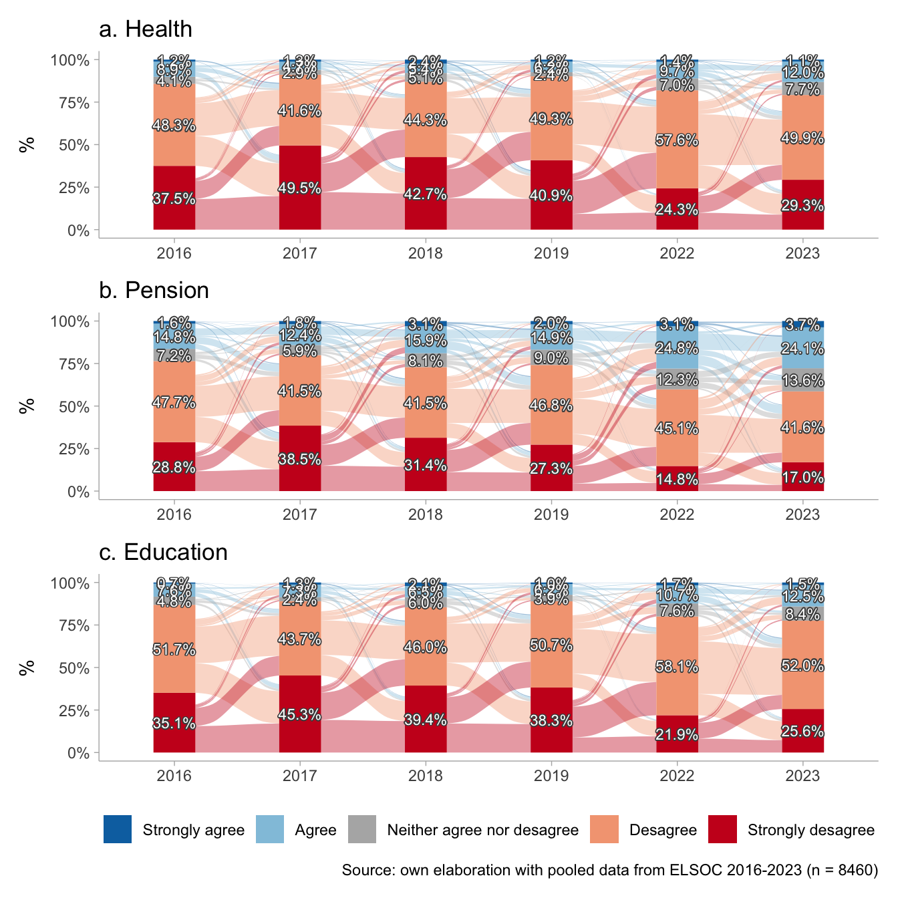

1 Presentation
This is the analysis code for the paper “Perceptions of Inequality and Meritocracy: Their Interplay in Shaping Preferences for Market Justice in Chile (2016-2023)”. The dataset used is df1.RData.
2 Libraries
3 Data
Show the code
load(file = here("input/data/proc/df1.RData"))
glimpse(df1)Rows: 11,971
Columns: 22
$ idencuesta <dbl> 1101011, 1101012, 1101013, 1101021, 1101022, 110…
$ wave <dbl> 1, 1, 1, 1, 1, 1, 1, 1, 1, 1, 1, 1, 1, 1, 1, 1, …
$ ponderador_long_total <dbl> 0.11821742, 0.11821742, 0.37739818, 0.05633656, …
$ segmento <dbl> 110101, 110101, 110101, 110102, 110102, 110102, …
$ estrato <dbl> 4, 4, 4, 4, 4, 4, 4, 4, 4, 4, 4, 4, 4, 4, 4, 4, …
$ just_educ <fct> Strongly desagree, Desagree, Neither agree nor d…
$ just_pension <fct> Strongly desagree, Desagree, Neither agree nor d…
$ just_health <fct> Desagree, Desagree, Strongly agree, Agree, Stron…
$ merit_effort <fct> Agree, Agree, Desagree, Agree, Strongly agree, N…
$ merit_talent <fct> Agree, Agree, Agree, Agree, Desagree, Strongly a…
$ age <fct> 50-64, 50-64, 18-29, 50-64, 65 or more, 50-64, 5…
$ sex <fct> Female, Female, Female, Male, Male, Male, Female…
$ ess <dbl> 5, 5, 3, 6, 4, 5, 6, 7, 4, 3, 2, 5, 0, 4, 6, 5, …
$ ideo <fct> Does not identify, Does not identify, Does not i…
$ mjp <dbl> 1.333333, 2.000000, 3.666667, 3.666667, 3.666667…
$ perc_inequality <dbl> 1.8971200, 0.5108256, 0.7621401, 3.9120230, 3.46…
$ just_inequality <dbl> 1.3862944, 1.7917595, 1.3862944, 5.6549923, 0.51…
$ educ <fct> Less than Universitary, Less than Universitary, …
$ educyear <dbl> 4.30, 9.80, 9.80, 14.90, 12.02, 9.80, 12.02, 13.…
$ ing_pc <dbl> 75000.00, 250000.00, 81666.67, 765000.00, 490000…
$ quintil <fct> Q1, Q4, Q1, Q5, Q5, Q5, Q4, Q4, Q2, Q3, Q4, Q4, …
$ quintil1 <fct> Q1, Q4, Q1, Q5, Q5, Q5, Q4, Q4, Q2, Q3, Q4, Q4, …4 Analysis
4.1 Descriptives
Show the code
Data Frame Summary
t1
Dimensions: 11971 x 13Duplicates: 19
| No | Variable | Label | Stats / Values | Freqs (% of Valid) | Graph | Valid | Missing | |||||||||||||||||||||||||
|---|---|---|---|---|---|---|---|---|---|---|---|---|---|---|---|---|---|---|---|---|---|---|---|---|---|---|---|---|---|---|---|---|
| 1 | just_health [factor] | Health distributive justice |
|
|
 |
11971 (100.0%) | 0 (0.0%) | |||||||||||||||||||||||||
| 2 | just_pension [factor] | Pension distributive justice |
|
|
 |
11971 (100.0%) | 0 (0.0%) | |||||||||||||||||||||||||
| 3 | just_educ [factor] | Education distributive justice |
|
|
 |
11971 (100.0%) | 0 (0.0%) | |||||||||||||||||||||||||
| 4 | mjp [numeric] | Market justice preferences |
|
13 distinct values |  |
11971 (100.0%) | 0 (0.0%) | |||||||||||||||||||||||||
| 5 | perc_inequality [numeric] | Inequality gap perception |
|
997 distinct values |  |
11971 (100.0%) | 0 (0.0%) | |||||||||||||||||||||||||
| 6 | just_inequality [numeric] | Inequality gap justification |
|
586 distinct values |  |
11971 (100.0%) | 0 (0.0%) | |||||||||||||||||||||||||
| 7 | merit_effort [factor] | People are rewarded for their efforts |
|
|
 |
11971 (100.0%) | 0 (0.0%) | |||||||||||||||||||||||||
| 8 | merit_talent [factor] | People are rewarded for their intelligence |
|
|
 |
11971 (100.0%) | 0 (0.0%) | |||||||||||||||||||||||||
| 9 | ess [numeric] | Subjective Social Status |
|
11 distinct values |  |
11971 (100.0%) | 0 (0.0%) | |||||||||||||||||||||||||
| 10 | ideo [factor] | Political identification |
|
|
 |
11971 (100.0%) | 0 (0.0%) | |||||||||||||||||||||||||
| 11 | educ [factor] | Education |
|
|
 |
11971 (100.0%) | 0 (0.0%) | |||||||||||||||||||||||||
| 12 | sex [factor] | Gender |
|
|
 |
11971 (100.0%) | 0 (0.0%) | |||||||||||||||||||||||||
| 13 | age [factor] | Age groups |
|
|
 |
11971 (100.0%) | 0 (0.0%) |
Generated by summarytools 1.0.1 (R version 4.2.2)
2025-03-05
Show the code
datos.health <- df1 %>%
group_by(idencuesta, wave) %>%
count(just_health) %>%
group_by(wave) %>%
mutate(porcentaje=n/sum(n)) %>%
ungroup() %>%
na.omit() %>%
mutate(wave = case_when(wave == 1 ~ "2016",
wave == 2 ~ "2017",
wave == 3 ~ "2018",
wave == 4 ~ "2019",
wave == 5 ~ "2022",
wave == 6 ~ "2023"),
wave = factor(wave, levels = c("2016",
"2017",
"2018",
"2019",
"2022",
"2023")))
etiquetas.health <- df1 %>%
group_by(wave, just_health) %>%
summarise(count = n(), .groups = "drop") %>%
group_by(wave) %>%
mutate(porcentaje = count / sum(count)) %>%
na.omit() %>%
mutate(idencuesta = 1,
wave = case_when(wave == 1 ~ "2016",
wave == 2 ~ "2017",
wave == 3 ~ "2018",
wave == 4 ~ "2019",
wave == 5 ~ "2022",
wave == 6 ~ "2023"),
wave = factor(wave, levels = c("2016",
"2017",
"2018",
"2019",
"2022",
"2023")))
p1 <- datos.health %>%
ggplot(aes(x = wave, fill = just_health, stratum = just_health,
alluvium = idencuesta, y = porcentaje)) +
ggalluvial::geom_flow(alpha = .4) +
ggalluvial::geom_stratum(linetype = 0) +
scale_y_continuous(labels = scales::percent) +
scale_fill_manual(values = c("#CA0020","#F4A582","#b3b3b3ff","#92C5DE","#0571B0")) +
geom_shadowtext(data = etiquetas.health,
aes(label = ifelse(porcentaje > 0 , scales::percent(porcentaje, accuracy = .1),"")),
position = position_stack(vjust = .5),
show.legend = FALSE,
size = 3,
color = rep('white'),
bg.colour='grey30')+
labs(y = "%",
x = NULL,
fill = NULL,
title = "a. Health") +
theme_ggdist() +
theme(legend.position = "none")
datos.pension <- df1 %>%
group_by(idencuesta, wave) %>%
count(just_pension) %>%
group_by(wave) %>%
mutate(porcentaje=n/sum(n)) %>%
ungroup() %>%
na.omit() %>%
mutate(wave = case_when(wave == 1 ~ "2016",
wave == 2 ~ "2017",
wave == 3 ~ "2018",
wave == 4 ~ "2019",
wave == 5 ~ "2022",
wave == 6 ~ "2023"),
wave = factor(wave, levels = c("2016",
"2017",
"2018",
"2019",
"2022",
"2023")))
etiquetas.pension <- df1 %>%
group_by(wave, just_pension) %>%
summarise(count = n(), .groups = "drop") %>%
group_by(wave) %>%
mutate(porcentaje = count / sum(count)) %>%
na.omit() %>%
mutate(idencuesta = 1,
wave = case_when(wave == 1 ~ "2016",
wave == 2 ~ "2017",
wave == 3 ~ "2018",
wave == 4 ~ "2019",
wave == 5 ~ "2022",
wave == 6 ~ "2023"),
wave = factor(wave, levels = c("2016",
"2017",
"2018",
"2019",
"2022",
"2023")))
p2 <- datos.pension %>%
ggplot(aes(x = wave, fill = just_pension, stratum = just_pension,
alluvium = idencuesta, y = porcentaje)) +
ggalluvial::geom_flow(alpha = .4) +
ggalluvial::geom_stratum(linetype = 0) +
scale_y_continuous(labels = scales::percent) +
scale_fill_manual(values = c("#CA0020","#F4A582","#b3b3b3ff","#92C5DE","#0571B0")) +
geom_shadowtext(data = etiquetas.pension,
aes(label = ifelse(porcentaje > 0 , scales::percent(porcentaje, accuracy = .1),"")),
position = position_stack(vjust = .5),
show.legend = FALSE,
size = 3,
color = rep('white'),
bg.colour='grey30')+
labs(y = "%",
x = NULL,
fill = NULL,
title = "b. Pension") +
theme_ggdist() +
theme(legend.position = "none")
datos.educ <- df1 %>%
group_by(idencuesta, wave) %>%
count(just_educ) %>%
group_by(wave) %>%
mutate(porcentaje=n/sum(n)) %>%
ungroup() %>%
na.omit() %>%
mutate(wave = case_when(wave == 1 ~ "2016",
wave == 2 ~ "2017",
wave == 3 ~ "2018",
wave == 4 ~ "2019",
wave == 5 ~ "2022",
wave == 6 ~ "2023"),
wave = factor(wave, levels = c("2016",
"2017",
"2018",
"2019",
"2022",
"2023")))
etiquetas.educ <- df1 %>%
group_by(wave, just_educ) %>%
summarise(count = n(), .groups = "drop") %>%
group_by(wave) %>%
mutate(porcentaje = count / sum(count)) %>%
na.omit() %>%
mutate(idencuesta = 1,
wave = case_when(wave == 1 ~ "2016",
wave == 2 ~ "2017",
wave == 3 ~ "2018",
wave == 4 ~ "2019",
wave == 5 ~ "2022",
wave == 6 ~ "2023"),
wave = factor(wave, levels = c("2016",
"2017",
"2018",
"2019",
"2022",
"2023")))
p3 <- datos.educ %>%
ggplot(aes(x = wave, fill = just_educ, stratum = just_educ,
alluvium = idencuesta, y = porcentaje)) +
ggalluvial::geom_flow(alpha = .4) +
ggalluvial::geom_stratum(linetype = 0) +
scale_y_continuous(labels = scales::percent) +
scale_fill_manual(values = c("#CA0020","#F4A582","#b3b3b3ff","#92C5DE","#0571B0")) +
geom_shadowtext(data = etiquetas.educ,
aes(label = ifelse(porcentaje > 0 , scales::percent(porcentaje, accuracy = .1),"")),
position = position_stack(vjust = .5),
show.legend = FALSE,
size = 3,
color = rep('white'),
bg.colour='grey30')+
labs(y = "%",
x = NULL,
fill = NULL,
title = "c. Education") +
theme_ggdist() +
theme(legend.position = "bottom")
(p1 / p2 / p3)

4.2 Correlations
Show the code
df1 %>%
select(mjp, perc_inequality, just_inequality, merit_effort, merit_talent) %>%
mutate_all(.funs = ~ as.numeric(.)) %>%
sjPlot::tab_corr(., triangle = "lower")| mjp | perc_inequality | just_inequality | merit_effort | merit_talent | |
| mjp | |||||
| perc_inequality | -0.057*** | ||||
| just_inequality | 0.119*** | 0.498*** | |||
| merit_effort | 0.162*** | -0.095*** | 0.026** | ||
| merit_talent | 0.147*** | -0.095*** | 0.020* | 0.684*** | |
| Computed correlation used pearson-method with listwise-deletion. | |||||
4.3 Longitudinal multilevel models
Show the code
m0 <- lmer(mjp ~ 1 + (1 | idencuesta),
data = df1)
performance::icc(m0, by_group = T)# ICC by Group
Group | ICC
------------------
idencuesta | 0.213Show the code
df1$merit_effort <- as_numeric(df1$merit_effort)
df1$merit_talent <- as_numeric(df1$merit_talent)
df1 <- df1 %>%
mutate(wave_f = case_when(wave == 1 ~ "2016",
wave == 2 ~ "2017",
wave == 3 ~ "2018",
wave == 4 ~ "2019",
wave == 5 ~ "2022",
wave == 6 ~ "2023"),
wave_f = factor(wave_f, levels = c("2016",
"2017",
"2018",
"2019",
"2022",
"2023")))
df1 <- df1 %>%
group_by(idencuesta) %>%
mutate(perc_inequality_mean = mean(perc_inequality, na.rm = T),
perc_inequality_cwc = perc_inequality - perc_inequality_mean,
just_inequality_mean = mean(just_inequality, na.rm = T),
just_inequality_cwc = just_inequality - just_inequality_mean,
merit_effort_mean = mean(merit_effort, na.rm = T),
merit_effort_cwc = merit_effort - merit_effort_mean,
merit_talent_mean = mean(merit_talent, na.rm = T),
merit_talent_cwc = merit_talent - merit_talent_mean,
) %>%
ungroup()
m1 <- lmer(mjp ~ 1 + perc_inequality + (1 | idencuesta),
data = df1)
m2 <- lmer(mjp ~ 1 + just_inequality + (1 | idencuesta),
data = df1)
m3 <- lmer(mjp ~ 1 + perc_inequality + just_inequality + (1 | idencuesta),
data = df1)
m4 <- lmer(mjp ~ 1 + perc_inequality + just_inequality +
merit_effort + (1 | idencuesta),
data = df1)
m5 <- lmer(mjp ~ 1 + perc_inequality + just_inequality +
merit_effort + merit_talent + (1 | idencuesta),
data = df1)
m6 <- lmer(mjp ~ 1 + perc_inequality + just_inequality +
merit_effort + merit_talent + perc_inequality_mean +
just_inequality_mean + merit_effort_mean +
merit_talent_mean + (1 | idencuesta),
data = df1)
m7 <- lmer(mjp ~ 1 + perc_inequality + just_inequality +
merit_effort + merit_talent + perc_inequality_mean +
just_inequality_mean + merit_effort_mean +
merit_talent_mean + ideo + quintil + educ + ess + age + sex + wave_f + (1 | idencuesta),
data = df1)Show the code
ccoef <- list(
"(Intercept)" = "Intercept",
perc_inequality = "Perception inequality (WE)",
just_inequality = "Justification inequality (WE)",
merit_effort = "Merit: Effort (WE)",
merit_talent = "Merit: Talent (WE)",
perc_inequality_mean = "Perception inequality (BE)",
just_inequality_mean = "Justification inequality (BE)",
merit_effort_mean = "Merit: Effort (BE)",
merit_talent_mean = "Merit: Talent (BE)",
ideoCenter = "Center",
ideoRight = "Right",
"ideoDoes not identify" = "Does not identify",
quintilQ2 = "Quintile 2",
quintilQ3 = "Quintile 3",
quintilQ4 = "Quintile 4",
quintilQ5 = "Quintile 5",
educUniversitary = "Universitary (Ref.= Less than universitary)",
ess = "Subjective social status",
"age30-49" = "30-49",
"age50-64" = "50-64",
"age65 or more" = "65 or more",
sexFemale = "Female (Ref.= Male)",
wave_f2017 = "2017",
wave_f2018 = "2018",
wave_f2019 = "2019",
wave_f2022 = "2022",
wave_f2023 = "2023"
)
texreg::htmlreg(list(m1, m2, m3, m4, m5, m6, m7),
custom.model.names = c(paste0("Model ", seq(1:7))),
caption = NULL,
stars = c(0.05, 0.01, 0.001),
custom.coef.map = ccoef,
digits = 3,
groups = list("Political identification (Ref.= Left)" = 10:12, "Income (Ref.= Quintile 1)" = 13:16, "Age (Ref. = 18-29)" = 19:21, "Wave (Ref.= 2016)" = 23:26),
custom.note = "\\item Note: Cells contain regression coefficients with standard errors in parentheses. %stars. \\\\ \\item Source: own elaboration with pooled data from ELSOC 2016-2023 (n = 4257).",
threeparttable = T,
leading.zero = T,
float.pos = "h!",
use.packages = F,
booktabs = T,
scalebox = 1)| Model 1 | Model 2 | Model 3 | Model 4 | Model 5 | Model 6 | Model 7 | |
|---|---|---|---|---|---|---|---|
| Intercept | 2.107*** | 1.800*** | 2.086*** | 1.777*** | 1.725*** | 1.562*** | 1.487*** |
| (0.026) | (0.016) | (0.026) | (0.033) | (0.035) | (0.055) | (0.067) | |
| Perception inequality (WE) | -0.050*** | -0.112*** | -0.100*** | -0.098*** | -0.091*** | -0.062*** | |
| (0.007) | (0.008) | (0.008) | (0.008) | (0.010) | (0.010) | ||
| Justification inequality (WE) | 0.070*** | 0.122*** | 0.115*** | 0.114*** | 0.070*** | 0.047*** | |
| (0.007) | (0.008) | (0.008) | (0.008) | (0.010) | (0.010) | ||
| Merit: Effort (WE) | 0.107*** | 0.076*** | 0.064*** | 0.064*** | |||
| (0.007) | (0.010) | (0.012) | (0.011) | ||||
| Merit: Talent (WE) | 0.047*** | 0.035** | 0.039*** | ||||
| (0.010) | (0.011) | (0.011) | |||||
| Perception inequality (BE) | -0.022 | -0.040* | |||||
| (0.017) | (0.016) | ||||||
| Justification inequality (BE) | 0.105*** | 0.099*** | |||||
| (0.015) | (0.015) | ||||||
| Merit: Effort (BE) | 0.033 | 0.028 | |||||
| (0.021) | (0.021) | ||||||
| Merit: Talent (BE) | 0.026 | 0.014 | |||||
| (0.021) | (0.020) | ||||||
| Political identification (Ref.= Left) | |||||||
| Center | 0.111*** | ||||||
| (0.022) | |||||||
| Right | 0.256*** | ||||||
| (0.025) | |||||||
| Does not identify | 0.120*** | ||||||
| (0.021) | |||||||
| Income (Ref.= Quintile 1) | |||||||
| Quintile 2 | 0.002 | ||||||
| (0.023) | |||||||
| Quintile 3 | 0.002 | ||||||
| (0.024) | |||||||
| Quintile 4 | 0.052* | ||||||
| (0.024) | |||||||
| Quintile 5 | 0.090*** | ||||||
| (0.026) | |||||||
| Universitary (Ref.= Less than universitary) | 0.009 | ||||||
| (0.023) | |||||||
| Subjective social status | 0.009 | ||||||
| (0.005) | |||||||
| Age (Ref. = 18-29) | |||||||
| 30-49 | 0.005 | ||||||
| (0.025) | |||||||
| 50-64 | 0.032 | ||||||
| (0.027) | |||||||
| 65 or more | 0.048 | ||||||
| (0.031) | |||||||
| Female (Ref.= Male) | -0.082*** | ||||||
| (0.018) | |||||||
| Wave (Ref.= 2016) | |||||||
| 2017 | -0.152*** | ||||||
| (0.023) | |||||||
| 2018 | -0.083*** | ||||||
| (0.021) | |||||||
| 2019 | -0.051* | ||||||
| (0.021) | |||||||
| 2023 | 0.263*** | ||||||
| (0.025) | |||||||
| AIC | 29020.661 | 28962.723 | 28779.568 | 28570.225 | 28556.028 | 28520.559 | 28166.918 |
| BIC | 29050.222 | 28992.284 | 28816.519 | 28614.567 | 28607.759 | 28601.852 | 28373.844 |
| Log Likelihood | -14506.331 | -14477.361 | -14384.784 | -14279.113 | -14271.014 | -14249.280 | -14055.459 |
| Num. obs. | 11971 | 11971 | 11971 | 11971 | 11971 | 11971 | 11971 |
| Num. groups: idencuesta | 4257 | 4257 | 4257 | 4257 | 4257 | 4257 | 4257 |
| Var: idencuesta (Intercept) | 0.149 | 0.138 | 0.131 | 0.123 | 0.123 | 0.119 | 0.109 |
| Var: Residual | 0.542 | 0.546 | 0.541 | 0.535 | 0.534 | 0.533 | 0.516 |
| Note: Cells contain regression coefficients with standard errors in parentheses. ***p < 0.001; **p < 0.01; *p < 0.05. \ Source: own elaboration with pooled data from ELSOC 2016-2023 (n = 4257). | |||||||